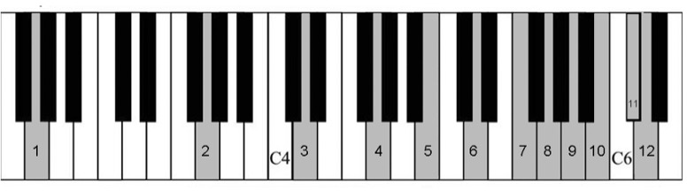
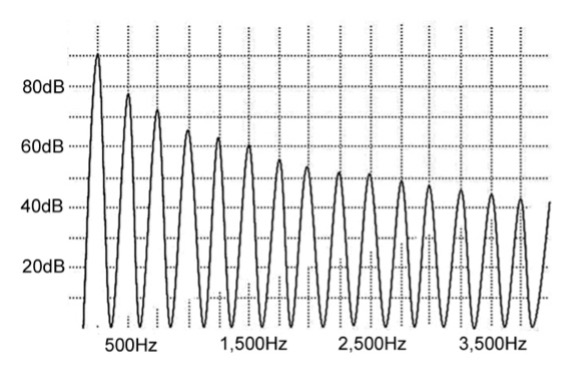
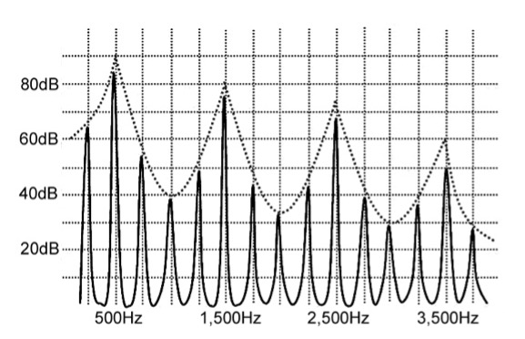
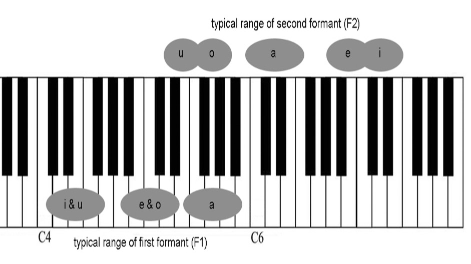
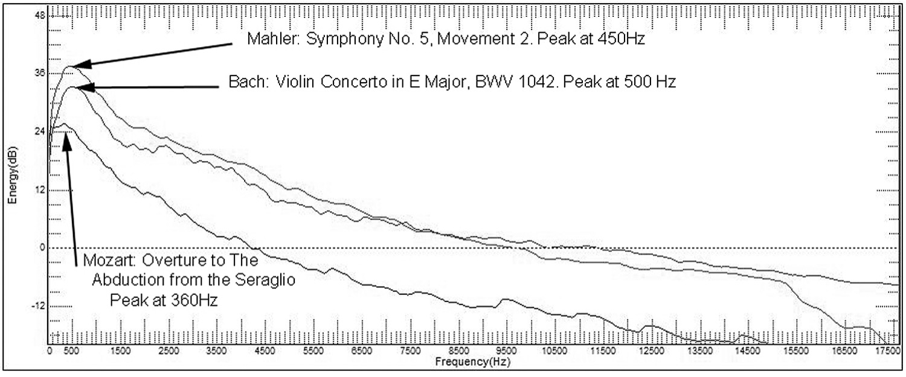
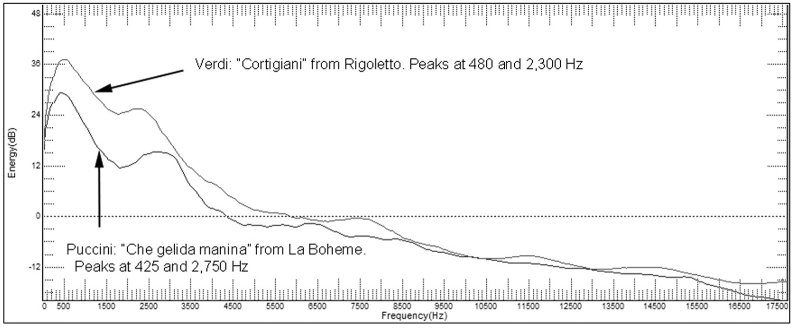
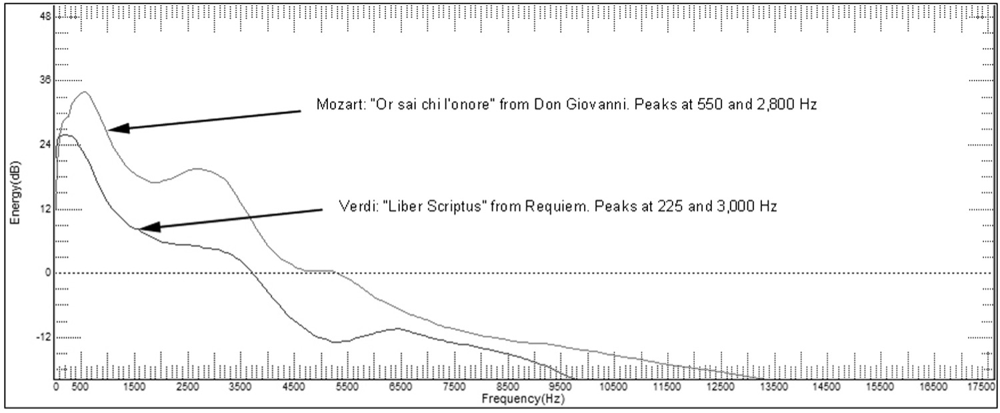
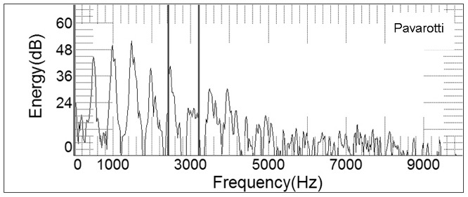
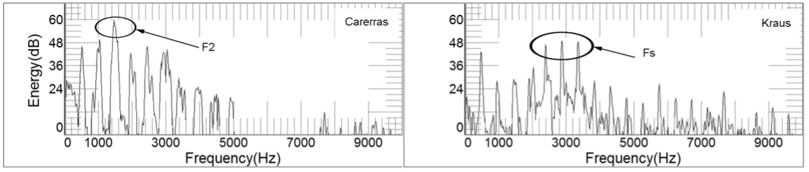

Chapter 2, part 1
The first portion of this chapter is reprinted from Your Voice: The Basics, which is intended to serve as an introduction to the acoustic and resonant properties of the voice. Readers who already are familiar with these concepts might want to skip ahead to part 2 of this chapter, and continue with chapters 3-5, which look at acoustics, resonance, and voice analysis in greater detail. Many readers, however, will find the current chapter to provide a knowledge base that is more than adequate to serve their needs as singers and teachers.
As most people already know, our vocal folds are the vibrational source of our voices (see Chapter 8 for a detailed discussion of laryngeal and vocal fold anatomy). But what is the nature of the sound they produce? Some will be surprised to learn that one larynx sounds pretty much like another; our individuality is more strongly related to our resonance characteristics than our vocal folds. In fact, if Pavarotti’s larynx had been transplanted in to my throat upon his death, I would still sound like McCoy.
Nonetheless, the quality of laryngeal sound remains vitally important for good singing. By itself, the larynx produces a sound that is best described as buzz. You can hear an approximation of this sound in multimedia example 2/1. Without the vocal tract, the larynx only can produce pitch and loudness; vowels and the articulation of language happen later in the process of phonation. Laryngeal sound is especially noteworthy because it is complex, containing a large number of simultaneously sounding frequencies (pitches). The primary pitch—the one we identify through names such as middle-C—is called the fundamental frequency, which often is abbreviated Fo (Frequency of Oscillation). When an orchestra tunes to A440, it means that the pitch A4 (a major sixth above middle-C on the piano) is vibrating at a frequency of 440 cycles per second, or 440 Hertz (abbreviate Hz).
Vocal sound also includes lots of overtones, which simply are additional frequencies present in a complex tone that are higher than Fo. In healthy voices, all the overtones are harmonics, which means they fit into a fixed intervallic series above the pitch you are singing. Harmonics are extremely important. In that regard, I often remind my singing and pedagogy students that harmonics can get you into vocal trouble not because of the actual pitch you are singing, but because of its overtones. Remember: when you sing a pitch, you are not just singing a tone with a specific frequency; you also are singing every harmonic overtone in the series above it (Figure 2-1). And sometimes we have vocal problems not because of the actual pitch we are singing (Fo), but because of a harmonic at higher frequency that conflicts with vocal tract resonance (I promise that this sentence will make sense by the time you finish the chapter). So, it pays to be aware of all your harmonics every time you open your mouth to sing.

Figure 2-1: Harmonic Series above G2
It’s actually pretty easy to remember the harmonic series. You can do this through brute memorization, like you learned the multiplication tables, or you can take some mnemonic shortcuts. Figure 2-1 shows the first twelve harmonics for the pitch G2, which—like all harmonics—fall into the intervallic sequence P8 (octave), P5, P4, M3, m3, m3, M2, M2, M2, M2, m2. To make it even easier, just remember the following sentence: grinning gorillas don’t get big dimples from gawking at baby chimps (C-sharp) dancing.
For practical purposes, however, it’s even easier; most of the time, everything you need to worry about falls within the first five to seven harmonics, so it often is okay to forget about the higher ones—at least for now. Here is a quick test. If you are singing the pitch C4 (middle-C), what is the third harmonic? I hope it didn’t take too long to realize it is G5 (octave + P5).
Your harmonics are your raw material. Your individuality and your ability to pronounce words are dependent upon the interaction of your harmonics with your resonance. Fortunately, the principles that guide this interplay are pretty straightforward and completely predictable.
The sound that leaves your mouth consists of your laryngeal buzz that has been modified by your resonance. Before we go further, it is important to understand that two kinds of resonance are active in your voice, which I like to think of a public and private. Your public resonance is what you share with your listeners, and results from enhancements to sound as it travels through the hollow spaces in your vocal tract. We generally refer to this as free resonance, because it relies on the free vibration of air molecules within a hollow space through which sound may enter and exit. Your body also produces forced resonance, which occurs when a physical object vibrates together with the sound source (your vocal folds). I refer to this phenomenon as private resonance because it is something nobody else ever hears (unless an ear is pressed against your body while you phonate). When you sing, you hear and feel this resonance, making it an important factor in your technique. But because it is private, forced resonance sensations differ from person to person; what I feel as a buzz in my forehead, my student might feel in his cheekbones—or not at all.
We need to return briefly to harmonics at this point in the discussion. As produced by the larynx, harmonics lose strength as they get farther away from the starting pitch in the sequence. We call this characteristic by many names, including spectral tilt, falloff, roll-off, or spectral slope. The rate at which this attenuation (reduction in loudness) occurs is dependent on a variety of factors, such as registration and whether the tone is balanced, breathy, or pressed. When the sound leaves the larynx, the first harmonic always is the loudest part of the sound; every additional harmonic grows progressively weaker, which is shown in Figure 2-2 and was heard in 2/1.

Figure 2-2: Spectrum of Sound at the Glottis
Media 2/1: Simulation of the Sound Produced by the Glottis
But by the time the sound makes it out your mouth, things have changed, often significantly. In men’s voices, it is common for the first harmonic, which is the actual pitch being sung, to be one of the weakest components of the sound the audience hears. Other harmonics are selectively boosted or diminished to create the vowel sounds of language, and to create the ringing quality that permits a singer to be heard over an orchestra. The spectrum displayed in Figure 2-3 shows a snapshot of the sound produced by an operatic baritone. The pattern of harmonic strength and weakness has gone through a remarkable transformation as it passed through his vocal tract!

Figure 2-3: Spectrum of Sound heard by the audience
(the vowel in this example would by a schwa)
The journey from Figure 2-2 to Figure 2-3 only was possible because of formants. Formants often are described as resonances of the vocal tract. For our purposes, resonance is the amplification and enhancement of vocal sound. Therefore, we might say that formants serve as our amplifiers. But they actually are quite selective in the amplification they provide. One formant might be really good at boosting pitches close to E4, while another focuses on D7. Pitches—in this case, harmonics—between those two points will be strongly attenuated. For this example, the resulting sound will have a timbre that listeners identify as the vowel /i/.
Given the questions I’m asked whenever I talk about this subject, it is clear that confusion remains about the difference between harmonics and formants. They are not the same thing. Harmonics are tangible, audible features of the sound produced by the glottis. Formants, however, are invisible and inaudible. They are like the wind: you can see leaves rustling in a tree, but you don’t see the wind that is making them move. You can hear harmonics (or see them in spectrum analysis), but you must infer that stronger harmonics have been amplified by a formant. Harmonics are the paint; formants are the artist’s brush that helps creates a masterpiece.
By placing formants in specific pitch ranges, we are able to create vowel sounds. And because there are fewer formants than harmonics, they actually are easier to remember. For purposes of singing, each vowel requires two formants, which are labeled F1 and F2, from lower to higher in pitch. Looking at the cardinal vowels, we see the first and second formants centered on the pitches indicated in Figure 2-4.

Figure 2-4: Typical Formant Frequencies of Cardinal Vowels
Here are your mnemonic devices to remember them: for the cardinal vowels, /i – e – a – o – u/, the first formants track the pitches of a C-major triad, in first inversion, open position (extending beyond an octave). Therefore, F1 for those vowels will be found at approximately:
/i/ = E4
/e/ = C5
/a/ = G5
/o/ = C5
/u/ = E4
Note that the first formant is about the same for /i/ and /u/, and again for /e/ and /o/. You can estimate F1 of the remaining vowels by plotting their relative position between the cardinals. For example, /ɛ/ will be found somewhere between /e/ and /a/, perhaps centered at about E5. This is a good time to remind you that formants are indiscriminate lovers; they do not particularly care what they amplify. Indeed, they are just as happy to boost the third harmonic as the first. They parallel the old song by Crosby, Stills, and Nash to love the one they’re with, cheerfully giving a boost to anything in the sound that comes close to them.
It’s time for another quick quiz: if you sing middle-C on the vowel /e/, which of the first four harmonics almost certainly will be the strongest? The answer is the second (H2 or 2Fo). If you didn’t spontaneously arrive at the answer, consider the steps required: 1) identify the likely pitch of F1 for the vowel /e/, which is C5; 2) ascend through the harmonic series above the sung pitch until you get to something that is close to F1 (in this case, 2Fo is an exact match). Take a minute and extend this logic to some other combinations of pitch and vowel. You actually can validate your responses by singing into a spectrum analyzer, such as VoceVista, Sing & See, or Voice Analyzer.
Let’s move on to the second formants for those cardinal vowels. This time, we’ll reverse the order, going from close to open in the pattern /u – o – a – e – i/. The typical center pitch for F2 now tracks as follows:
/u/ = E5
/o/ = G5
/a/ = D6
/e/ = B6
/i/ = D5
Here is a handy mnemonic device to remember these targets: English Gardeners Daily Buy Daisies.
Now for the caveats: The pitch centers I’ve shown you for F1 and F2 are only approximate. They will vary to a certain extent from person to person; tall people with long vocal tracts will have all their formants lowered in pitch, while shorter people tend to have proportionally shorter vocal tracts and uniformly higher formants. So, we can think in terms of ranges. F1 for /i/ might typically be centered at E4, but it could extend as much as a major third above or below that pitch. The same holds true for all other formants. We can’t just keep going up or down indefinitely, however. If you elevate F1 of /i/ too far, the vowel changes into /e/. Keep going and you will pass through /ɛ/ and /æ/, eventually coming to something that invariably resembles /a/. This auto-morphing of one vowel into another as F1 ascends in pitch explains why women are pretty much incapable of singing “pure” vowels on high notes—if the pitch you are singing is higher than the formant zone required to identify a vowel, that vowel is impossible to sing with acoustic, phonemic accuracy. This principle is demonstrated in Figure 2-5, which shows the typical formants of /i/ as they try to influence the harmonics above the pitches E4 and D7. You can listen to the impact of Fo rising above the expected frequency of the first formant (F1) in example (2/2).
Media 2/2: Fundamental rising about first formant reduces vowel accuracy
Figure 2-5: Formants of /i/, showing impact of varying fundamental pitch
Knowing precisely how harmonics are likely to interact with formants can make our singing much more efficient. I firmly believe that this understanding can help anyone become a better singer and teacher of singing; of course, it will be most effective if you also have a general sense of good vocalism and an established toolbox to induce better sound quality. Nevertheless, if your teaching currently is ineffective, knowing about acoustics probably isn’t going to turn you into Manuel Garcia III. Let’s look at three specific examples of how you might apply this information about formants.
We singing teachers are very aware, sometimes painfully so, of the perils of the upper range in men’s voices. Whether we call it the upper extension, head voice, cover, or mixed register, the problem tends to be the same: inexperienced singers either open too far, producing a timbre similar to yelling, or they overly tighten, producing a swallowed, heavily covered tone. Formants come to our rescue, in a somewhat counterintuitive manner. For the young male singer, the transition to his upper register (not mode 2 or falsetto production) feels like there is a physical change in the way his larynx functions. When done correctly, however, this registration shift primarily is an acoustic event, which occurs when the second harmonic ascends above the normal location of F1 for any vowel that is sung. Because vowels have F1 at different pitches, each vowel makes its transition to the upper register at a different location in the scale, close vowels lower, and open vowels at high pitch.
For most developing tenors, baritones, and basses, the most difficult vowel to master through this transition is /a/, which, not coincidentally, has the highest F1 at approximately G5. He has three strategies at this point, two of which are dead ends. The first option is to elevate his larynx and/or spread his vowel, either of which will result in an elevation in pitch of F1. In this scenario, F1 latches on to the second harmonic (2Fo), resulting in a brassy, yelled timbre. If he tries to continue up the scale in this manner, eventually his voice will crack or break into the falsetto registration of mode 2. As an alternative, he may try to deliberately close his vowel, often by tensing the back of his tongue. The result is a lowering of the pitch of F1, which breaks its link to 2Fo. But when approached in this manner, the sound is likely to be weak, swallowed, tense, and generally unpleasant. The optimal solution essentially is to do nothing. If the vocal tract is maintained in the shape required to produce /a/ with a stable (non-elevated) larynx position, and without excess tension in the tongue, jaw, or lips, 2Fo will gracefully slip beyond the upper boundary of F1, turning the voice over into the upper extension with seamless fluidity and beauty. Unfortunately, the habits of raising the larynx or tensing the tongue are easily acquired, but difficult to eliminate. For this reason, I try to avoid addressing the passaggio until my singers have mastered the ability to sing with a larynx in a stable, relaxed, neutral position, neither elevated nor depressed.
Women face a similar problem at the top of the treble clef. Many sopranos and mezzo instinctively lift their larynx and spread their vowels when approaching this part of the scale. As with male singers, the result is a brassy, overly bright timbre that resists going much beyond the pitch B5. If women cling to a bright, open /a/ in this range, they tend to lock F2 with 2Fo, just like the men did with F1 an octave lower. But now, they are taking F2 well beyond its reasonable upper extreme. The solution is to subtly round the vowel toward /ͻ/, which lowers the pitch of F2 sufficiently to release its bond with 2Fo, simultaneously allowing F1 to join with pitch being sung (Fo). As with men, this maneuver must be accomplished without excess tension or manipulation of the tongue, jaw, or lips. The larynx also should freely remain in a stable position.
For this third example, I’m going to go full-bore pedagogy geek on you. I recently was working with a choir on Brahms’ setting of the hymn Ach, arme Welt. This brief work features some tricky chromaticism that was negatively impacting intonation, especially for the basses. Their first statement of the word Welt occurs on the pitch A3-flat, which is the seventh in a third inversion B-flat7 chord: it was hopelessly out of tune. Using the relationship of vowel formants to harmonics, I usually would recommend slightly closing the vowel in this word toward /velt/, rather than the more phonetically correct /vɛlt/. This subtle alteration would bring F1 closer to the second harmonic, which should yield a cleaner, more incisive timbre. But making this modification put their second harmonic a major second away from the B4-flat being sustained by the altos. Intonation was even worse. We next tried opening the vowel toward /vælt/; unfortunately, this put the spotlight on their third harmonic, which now was only a half-step away from the sopranos, who were singing D5. The ultimate solution was to open the vowel even further, approaching /vΛlt/. With this vowel, F1 latched on to the fourth harmonic, located two octaves above the pitch they were singing. By opening the vowel in this manner, we avoided all the strong dissonances with the upper voices, allowing the chord finally to settle into clean, accurate intonation.
I warned you that this last example would be on the technical side. But don’t let that dissuade you from your own exploration of the relationships between formants and harmonics. Keep the harmonic series in mind at all times and use your memory tricks to locate your formant targets. From that point, it is a simple matter to look for the intersections. You might need to open or close a vowel a bit to get your optimal match, but the rewards are worthwhile. When pitch cleanly intersects with formants, voices are allowed to bloom, ensuring vocal freedom and tonal beauty.
There is one additional formant that must be discussed. This one is so important and so specialized that it even is named after us: the singer’s formant. The singer’s formant, or Fs, actually is a clustering together of formants three, four, and five. In fact, their frequencies are so close together that they become a single, super-formant, amplifying harmonics somewhere in the range between 2,400-3,200Hz (between D7 and G7, in the highest octave of the piano keyboard). The bottom end of this range begins to overlap with F2 for the vowel /i/, so there isn’t much flexibility on extending Fs downward; it might, however, be located as high as 4,000Hz at the upper extreme.
Figure 2-6: Epilarynx
For many generations, classical singers have produced a ringing tone quality that enables their voices to project over the sound of an orchestra without supplemental amplification. It turns out the when the entire sound of an orchestra—or piano—is averaged together, the loudest sounds occur at about 500Hz (midway between B4 and C5). The amplitude of higher frequencies rapidly diminishes. Remember, we are talking here about the composite sound of the orchestra, not the individual instruments. Many instruments will be playing pitches higher than C5 at any given moment; but many also will be substantially lower. Regardless, the fundamental frequency rarely extends beyond C7, but the harmonics of all the simultaneously sounding orchestral instruments will exceed that level by a significant margin. Fortunately for us singers, these harmonics have become strongly attenuated before they reach these lofty heights. So, if an operatic tenor engages his singer’s formant to boost harmonics in this pitch range, he has little to no competition from the orchestra. It almost is as if he stepped into a spotlight on a dark stage. The relative frequency distributions of the orchestra and opera singers are shown in Figures 2-7 through 2-9.
We’ll start by looking exclusively at the spectrum of the orchestra, as represented by three iconic composers: Johann Sebastian Bach, Wolfgang Amadeus Mozart, and Gustav Mahler. The image in Figure 2-7 represents a long-term average spectrum of the music. Frequency is shown on the horizontal axis, amplitude on the vertical axis, and time is averaged to show an entire musical movement. The result is a soundprint, not unlike a fingerprint, which is unique to the music and performance. All three of these examples demonstrate a strong amplitude peak in the vicinity of 500Hz; higher frequencies, including both actual pitches that are played and all of their overtones, rapidly lose strength. It is interesting to note that the images are remarkably similar, in spite of differences in instrumentation and musical style.

Figure 2-7: Average spectra of Mozart, Bach, and Mahler orhestras
The picture changes dramatically when we add singers to the mix. Figure 2-8 shows tenor and baritone excerpts from Puccini and Verdi. We still see the strong peak in the spectrum around 500Hz, but additional energy is now seen (and heard) at much higher frequency, which is caused by amplification of harmonics that fall within the singer’s formant region.

Figure 2-8: Average spectra of men's Puccini and Verdi arias with orchestra
Women may or may not actively engage the singer’s formant. As shown in Figure 2-9, the soprano singing “Or sai chi l’onore” adapts her resonance to include significant strength in her high harmonics. She needs this energy to compete with the orchestra, which is playing loudly in her tessitura. By contrast, the mezzo who sings “Liber Scriptus” employs a relatively weak singer’s formant. Verdi’s orchestration for this aria is light in texture and is dominated by lower frequencies. She doesn’t need to emphasize her high harmonics to be heard.

Figure 2-9: Average spectra of women's Puccini and Verdi arias with orchestra
While the singer’s formant is extremely helpful in enabling opera and concert singers to be heard, it is not absolutely essential. Sopranos do not always need the extra help it provides, especially when singing their climactic high pitches. For example, a soprano’s high-C (C6) already exceeds 1,000Hz, which is an octave above the energy peak in orchestral sound. She is singing so high that she has little or no acoustic competition. Besides, at that high Fo, only one harmonic is present within the traditional singer’s formant zone. Most sopranos therefore rely on a strategy that enhances Fo and minimizes all higher harmonics. Indeed, if they give too much energy to the stratospheric harmonics, their voices will sound harsh and unpleasant.
Sopranos are not the only opera singers who sometimes abandon the singer’s formant. Donald Miller demonstrated that some operatic tenors actually minimize the impact of Fs for climactic high notes, preferring a strategy that aligns F2 with the third harmonic (Miller, 2008). Luciano Pavarotti provided the quintessential model for this practice, especially in his clarion high notes. We see evidence of this strategy on the climactic B4 that ends the aria “La donna è mobile.” The spectrum of the final syllable of pensier shows a dramatic peak of energy in the third harmonic; surprisingly, harmonics in the singer’s formant zone are noticeably weaker (Figure 2-10 and in 2/3). In this example, the third harmonic is located at 1,480Hz (F6-sharp); this is nearly 1,000Hz above the typical orchestral peak (500Hz), ensuring clear, easy projection. The voice still possesses ring, but it is pitched almost an octave below the typical singer’s formant.

Figure 2-10: Spectrum of Pavarotti singing "pensier" on B4
Media 2-3: Pavarotti employing the second formant for strong resonance
Pavarotti is not the only tenor who employs this alternate strategy of formant tuning. Let’s compare two others, both singing the final note from “La donna è mobile:” José Carreras and Alfredo Kraus (Figure 2-11). Carreras employs the same strategy as Pavarotti, using F2 to give strong emphasis to 3Fo. But Kraus takes the more traditional route, using Fs to strongly boost harmonics 5 through 7; in fact, 3Fo makes only a small contribution to his overall sound. Clearly, there is more than one way to skin this cat!

Figure 2-11: Spectra of Carreras and Kraus singing "pensier"
The singer’s formant also rarely is used in commercial or popular styles that rely on microphones for sound enhancement. Singers who specialize in musical theater, however, might use a sound that includes some ring. This is especially true for classic shows like South Pacific or works by Gilbert and Sullivan. Stage actors and public speakers also might employ a ringing timbre through a speaker’s formant. One common factor runs through all voice users who employ the ringing quality produced by a singer’s or speaker’s formant: the need to project the voice without significant help from electronic amplification
*A useful tool for exploring the relationship between harmonics and formants is Madde, which is a formant synthesizer program available for free download at www.speech.kth.se/smptool. Madde is like VoceVista and many other voice analysis programs: it is designed for PC but works perfectly on a Mac—as long as you have Windows® installed on it!
Now that you’ve finished part-one of this chapter, you can decide if you have learned enough about acoustics and resonance to move on to anatomy & physiology of the voice, which begins in Chapter 6, page 1113. If you would like to explore voice acoustics in greater detail, read on! We’ll also take some time to look at your option in terms of acoustic analysis of the voice.